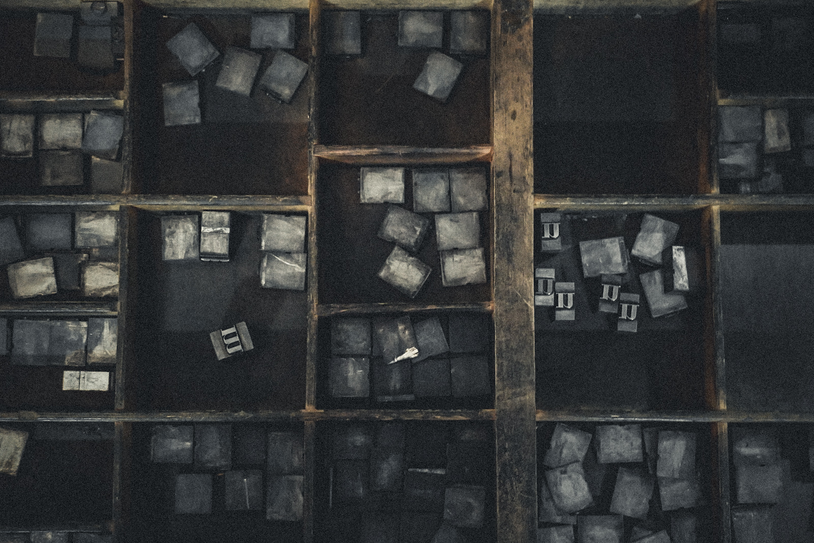

Denne delen av utstillingen utforsker vi språket i den samiske avisen *Waren Sardne* og ser nærmere på de historiske, kulturelle og praktiske forholdene som har formet språkbruken. Gjennom en dypere forståelse av hvordan fornorskning, språklig tilgjengelighet, mangel på et skriftspråk, og praktiske hensyn har påvirket både samisk og norsk, vil vi gi innsikt i hvorfor norsk spiller en viktig rolle i samisk media i dag. Vi skal gå gjennom fire hovedaspekter som forklarer samspillet mellom samisk og norsk språk i *Waren Sardne*, og hvordan dette reflekterer den større språklige situasjonen for samene i Norge.
1. Historisk Undertrykkelse
Fornorskningspolitikken som ble iverksatt fra 1800-tallet og langt ut på 1900-tallet, hadde som mål å assimilere samene og andre minoriteter til den norske kulturen og språket. Dette førte til at samisk språk, kultur og identitet ble kraftig undertrykt. Barn ble ofte sendt til internatskoler hvor det var forbudt å snakke samisk, og bruken av samisk i det offentlige rom var begrenset. Som en konsekvens av denne systematiske undertrykkelsen, mistet mange samer evnen til å bruke sitt eget språk, både muntlig og skriftlig. Norsk ble derfor det dominerende språket for mange samer. Selv om det i dag finnes et økende fokus på revitalisering av samisk språk, er norsk fortsatt et viktig kommunikasjonsmiddel i samiske samfunn, både for å nå de som ikke behersker samisk og for å skape en bro til det bredere norske samfunnet.
2. Tilgjengelighet
Norsk brukes i mange samiske medier for å nå et bredere publikum. Dette inkluderer samer som på grunn av fornorskningen har mistet tilknytningen til det samiske språket, samt personer utenfor det samiske samfunnet som er interessert i å lære om samiske saker. Norsk er majoritetsspråket i Norge, og derfor er det viktig for samiske medier å kommunisere på et språk som mange forstår. Dette gjelder spesielt for nyhetsformidling og informasjon som angår hele befolkningen, som for eksempel politiske beslutninger eller kulturarrangementer. Ved å inkludere norsk, sikrer man at informasjonen når ut til både samer og nordmenn, og på den måten skapes en plattform hvor samiske saker kan diskuteres i et bredere perspektiv.

3. Mangel på Skriftspråk
Samisk språk har i stor grad vært et muntlig språk i mange hundre år. Selv før fornorskningen startet, var det ikke et standardisert skriftspråk for samisk. Tradisjonelt ble samisk kunnskap og kultur videreført gjennom muntlige tradisjoner som joik, fortellinger, og andre former for muntlig overlevering. Det var først i forbindelse med kristen misjonering på 1600-tallet at samisk fikk sin første formelle skriftspråklige form gjennom oversettelser av bibelske tekster. Imidlertid har utviklingen av et samisk skriftspråk vært preget av fragmentering og langsom fremgang, spesielt fordi det finnes flere ulike samiske språkvarianter, hver med sine egne dialekter og utfordringer knyttet til standardisering. Dette har gjort at mange samiske samfunn fortsatt sliter med å utvikle og bruke skriftspråket i stor skala, og som et resultat av dette er det ofte enklere og mer praktisk å benytte norsk.
4. Praktiske Hensyn
Norsk har blitt det dominerende språket i mange samiske områder på grunn av fornorskningen, både muntlig og skriftlig. Selv om det i dag er en sterk bevegelse for å gjenopprette og styrke bruken av samisk, er norsk fortsatt det språket som flest forstår og kan bruke daglig. Dette gjør at samiske medier ofte velger en tospråklig publisering, slik at de både kan ivareta det samiske språket og samtidig sørge for that viktige nyheter og informasjon når ut til de som ikke snakker eller leser samisk. Et annet praktisk aspekt er at samisk er et minoritetsspråk med begrensede ressurser, både når det gjelder undervisning, oversettelser, og publisering. Ved å bruke norsk kan samiske medier sikre at de har tilstrekkelig med ressurser til å produsere kvalitetsinnhold, samtidig som de holder det samiske språket levende gjennom flerspråklige publikasjoner.
5. Et gammelt språk
Det norske skriftspråket var i kontinuerlig forandring på 1800-1900 tallet. De største faktorene til at det norske skriftspråket var i så stor forandring var at i 1814 løsrav Norge seg fra danmark, dette førte til at det norske folk ønsket seg eget skriftspråk. Både språket og skriftspråket hadde blitt påvirket av dansk, men i hovedsak ble skriftspråket kalt “dansk-norsk”. Det ble bestemt at det norske skriftspråket skulle bli basert på den danske skrifttradisjonen, men målet var og fornorsket det i så stor grad. I avisen Waren Sardne ser vi flere tegn til dansk skriftspråk og at flere ord og setningsoppbygningen er veldig lik som den i danmark. i nyere tider har danske ord og fraser blitt skylt ut av det norske skriftspråket. dette skjedde fordi på samme tid som vi skulle få eget skriftspråk, ble bokmål og nynorsk innført.